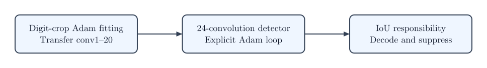
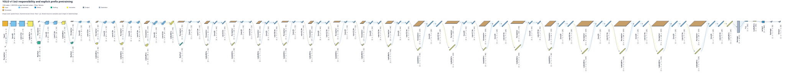
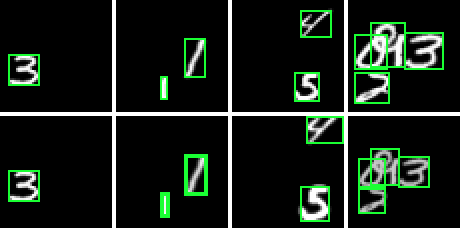
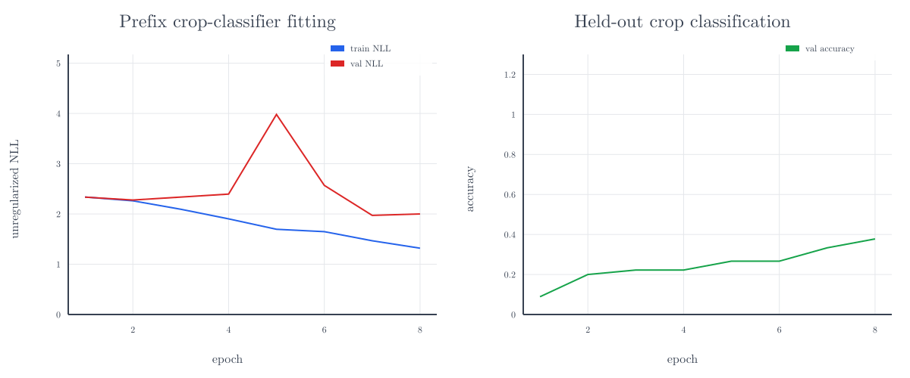
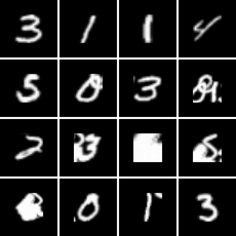
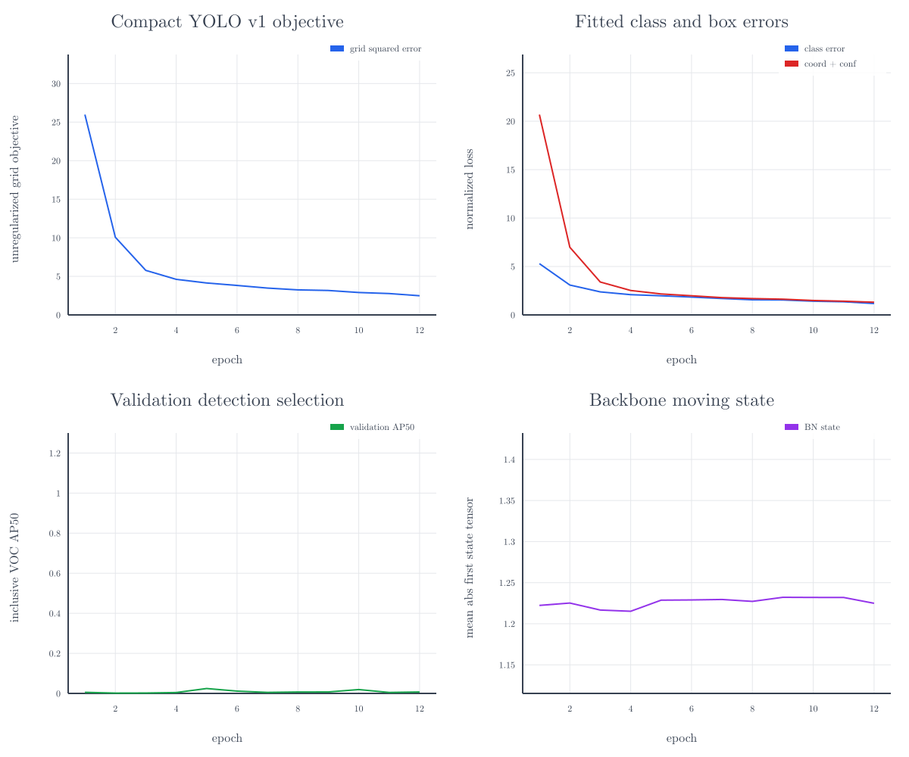
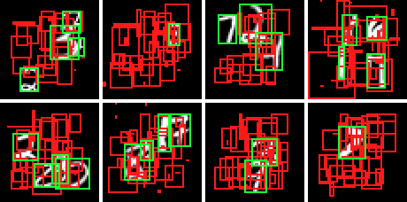

YOLO v1 IoU responsibility and explicit prefix pretraining
Abstract
Check every YOLO v1 loss derivative and the actual full448-pixel convolution graph, show tensor affine data/crop examples, then visibly fit a crop classifier, transfer its prefix and fit every compact detector parameter with paired BN checkpoints.
Source example: examples/cpp/source/nn/1_convolutional_neural_networks/1.6_object_detection/yolo_v1.cpp.
The method
YOLO v1 predicts two linear boxes and shared class scores per7x7 cell. Detached IoU responsibility chooses the coordinate predictor. Optional digit-crop pretraining initializes the first20 convolutions, followed by explicit whole-detector optimization.
The concept diagram below is drawn by dm::graphics::Diagram. Its editable C++
source is the complete block below; regeneration uses the same datamunge toolchain
as the numerical examples. Exports consume the saved local SVG.
#include <dm/dm.hpp>
int main() {
std::filesystem::create_directories("build");
dm::graphics::Diagram diagram;
diagram.node("n0", {0.0, 0}, "Digit-crop Adam fitting\nTransfer conv1–20");
diagram.node("n1", {5.2, 0}, "24-convolution detector\nExplicit Adam loop");
diagram.node("n2", {10.4, 0}, "IoU responsibility\nDecode and suppress");
diagram.edge("n0", "n1").edge("n1", "n2");
diagram.save_svg("build/yolo_v1_concept.svg");
}
Executed tensor architecture
This figure executes the inference configuration shown in the code, using a zero-valued shape probe without fitting or loading a checkpoint. Named stage boundaries group whole subgraphs where available; other nodes retain functional-layer detail. Exact batch-inclusive shapes and reachable parameter totals come from the trace. Shared linear scales map spatial dimensions and channel counts to blocks; the one-pixel visibility floor is disclosed in the legend. Labels use compact monospace text, rotate counterclockwise and sit beside their own glyphs. Arrows flow left to right; wide diagrams scroll at native size on the website.
#include <dm/dm.hpp>
int main() {
namespace n = dm::nn;
namespace m = n::models;
n::set_num_threads(2);
std::filesystem::create_directories("build");
m::DetectionSceneConfig cfg;
m::YoloV1Config model;
n::ParameterStore p(17), state(17), pre(17), prestate(17);
cfg.scenes = 80;
cfg.height = cfg.width = 56;
cfg.seed = 11;
model.classes = 10;
model.compact = true;
model.width_divisor = 8;
model.dense_width = 256;
model.keep_probability = 1;
model.batch_norm = true;
n::Module architecture_model(
[&](const n::Tensor& image) { return m::YoloV1(p, &state, image, model, false).prediction; },
"YOLO v1 IoU responsibility and explicit prefix pretraining");
n::ModelPlotOptions options;
options.style = n::ModelPlotStyle::Flow;
options.detail = n::ModelPlotDetail::Blocks;
options.labels = {.type = n::ModelPlotLabel::NameAndShape, .size = 12, .wrap = 24};
options.spacing = {.layer = 24, .lane = 12, .label = 8, .margin = 20};
options.sizing.spatial_size = 96;
options.sizing.channel_size = 42;
options.sizing.minimum_extent = 1;
options.opacity = .8;
const auto diagram = architecture_model.plot(n::zeros({1, 56, 56, 1}), options);
diagram.save_svg("build/yolo_v1_architecture.svg");
std::print(
"{} displayed nodes; {} reachable learned values.\n",
diagram.nodes().size(),
diagram.parameter_count());
}106 displayed nodes; 2801020 reachable learned values.

IoU responsibility and the exact squared-error objective
Each cell shares class scores across two predictors. Each predictor emits
dy,dx,sqrt(height_fraction),sqrt(width_fraction),confidence as *linear*
outputs. Its decoded root sizes square, including negative roots. In an
occupied cell, the larger current IoU wins responsibility, first predictor on
ties. The confidence target is that detached IoU. Coordinates weight5;
nonresponsible/background confidences weight.5. Class squared error applies
only in occupied cells. Loss sums all terms per image, then averages the batch.
Centre-cell collisions keep the largest normalized-area object, first on ties, and report discarded targets. This creates a representation limit independent of optimizer quality. The fixture checks every analytic derivative for exact, imperfect, swapped-responsibility and empty-cell cases. IoU targets and the responsibility selection remain detached from coordinate gradients.
#include <dm/dm.hpp>
int main() {
namespace n = dm::nn;
const auto type = n::DType::Float64;
std::vector<double> value = {.2, .8, .5, .5, .5, .5, .4, .2, .2, .3, .3, .2};
n::models::YoloV1Targets t{n::ones({1, 1, 1}, type), n::full({1, 1, 1, 4}, .5, type),
n::ones({1, 1, 1}, n::DType::Int64), 0};
double error = 0;
const auto check = [&](double expected, const std::vector<double> &derivative,
int responsible) {
const auto x = n::from_vector(value, {1, 1, 1, 12}).requires_grad_();
const auto out = n::models::YoloV1Loss(x, t, 2, 1);
error = std::max(error, std::abs(out.loss.item() - expected));
const auto g = n::grad(out.loss, {x})[0].to_vector<double>();
for (int i = 0; i < 12; ++i)
error = std::max(error, std::abs(g[i] - derivative[i]));
for (int i = 0; i < 2; ++i)
if (out.responsible.at({0, 0, 0, i}) != (i == responsible ? 1 : 0))
throw std::runtime_error("responsibility mismatch");
if (out.iou.requires_grad() || out.responsible.requires_grad())
throw std::runtime_error("target graph must be detached");
};
check(.46, {.4, -.4, 0, 0, 0, 0, -1.2, 0, 0, 0, 0, .2}, 0);
value[4] = value[5] = .4;
check(.20009216, {.4, -.4, 0, 0, -1, -1, -.0192, 0, 0, 0, 0, .2}, 0);
for (int i = 0; i < 4; ++i) {
value[2 + i] = .1;
value[7 + i] = .5;
}
check(.8, {.4, -.4, 0, 0, 0, 0, .4, 0, 0, 0, 0, -1.6}, 1);
t.object = n::zeros({1, 1, 1}, type);
check(.1, {0, 0, 0, 0, 0, 0, .4, 0, 0, 0, 0, .2}, -1);
if (error > 1e-10)
return 1;
std::print("All four complete loss/derivative fixtures pass, max error{:.12f}: exact.46, "
"imperfect.20009216, switched.8, empty.1. IoU and responsibility are detached; "
"ties choose predictor0.\n",
error);
}All four complete loss/derivative fixtures pass, max error0.000000000000: exact.46, imperfect.20009216, switched.8, empty.1. IoU and responsibility are detached; ties choose predictor0.
Paper convolution graph and bounded dense-head accounting
The full448-pixel RGB architecture has24 convolutions with leaky-ReLU slope.1, no BN and a7x7x1024 final map. The following actually differentiates all48 convolution kernel/bias tensors. Its60,155,968 convolution scalars plus a 211,547,582-scalar4096-wide dense head give271,703,550 total. The huge dense head is counted from shapes rather than allocated; the full detector is not claimed to have been trained. Compact fitting below executes both dense layers.
#include <dm/dm.hpp>
int main() {
namespace n = dm::nn;
n::set_num_threads(2);
n::ParameterStore p(17);
const auto net = n::models::YoloV1Backbone(
p, nullptr, n::sin(.13 * n::arange(0, 448 * 448 * 3)).reshape({1, 448, 448, 3}));
if (net.features.shape() != n::Shape{1, 7, 7, 1024} || net.convolutions.size() != 24 ||
p.count() != 60155968)
return 1;
const auto g = n::grad(n::mean(n::square(net.features)), p.parameters());
if (g.size() != 48)
return 1;
for (const auto &v : g)
if (!v.defined() || !std::isfinite(n::sum(n::square(v)).item()))
return 1;
const std::int64_t head = std::int64_t(7 * 7 * 1024) * 4096 + 4096 + 4096 * 1470 + 1470;
if (p.count() + head != 271703550)
return 1;
std::print("Executed full448RGB backbone:{} convolution scalars,{} finite defined "
"gradients,7x7x1024 features. Dense head counted from shapes:{} scalars; "
"total{}. Full huge head is not allocated/fitted.\n",
p.count(), g.size(), head, p.count() + head);
}Executed full448RGB backbone:60155968 convolution scalars,48 finite defined gradients,7x7x1024 features. Dense head counted from shapes:211547582 scalars; total271703550. Full huge head is not allocated/fitted.
Actual56-pixel data and tensor affine/exposure augmentation
The compact model retains all24 convolutions, with widths divided by eight, 256 dense units and7x7x128 features at56gray pixels. It removes the original first/22nd strides and fourth pooling operation. This report enables the source's optional BN experiment (momentum.9,epsilon1e-5), disables dropout, and has2,801,020 learned/3,296 moving-state scalars. Without BN the same model has2,799,372 learned scalars and no moving state. These differ from the paper's unnormalized full model.
Scenes use64 fit/16 validation examples from the first2048 MNIST training digits,seed11, and eight test scenes from the first512 official test digits, seed22, generated directly on56x56 canvases. They are not the64-pixel scene layout used by previous reports. The gallery compares actual inputs with explicit scale/translation/exposure variants. Inverse pixel-centre bilinear sampling and boxes use matching transforms, with zero image padding and clipped boxes. Pixel quantization is tensor half-up rounding to bytes/255.
#include <dm/dm.hpp>
int main() {
namespace n = dm::nn;
n::set_num_threads(2);
std::filesystem::path cache;
if (const auto *p = std::getenv("DATAMUNGE_DATA_DIR"))
cache = p;
else if (const auto *p = std::getenv("XDG_CACHE_HOME"))
cache = std::filesystem::path(p) / "datamunge/datasets";
else
cache = std::filesystem::path(std::getenv("HOME")) / ".cache/datamunge/datasets";
dm::datasets::fetch("mnist", (cache / "mnist").string());
const auto train = n::load_mnist((cache / "mnist").string(), "train");
n::models::DetectionSceneConfig cfg;
cfg.scenes = 80;
cfg.height = cfg.width = 56;
cfg.seed = 11;
const auto scenes = n::models::MakeTensorDetectionScenes(
n::slice_axis(train.images, 0, 0, 2048), n::slice_axis(train.labels, 0, 0, 2048), cfg);
std::vector<std::int64_t> rows = {0, 1, 2, 3};
const auto augmented = n::models::TransformTensorDetectionScenes(
scenes, rows,
n::tensor({1., 0., 0., 1., 1., .5, .5, 1., 1.2, -3., 2., 1.3, .8, 2., -3., .8}, {4, 4}));
std::vector<n::Tensor> boxes(scenes.boxes.begin(), scenes.boxes.begin() + 4);
const auto before = n::models::DrawDetectionBoxes(n::slice_axis(scenes.images, 0, 0, 4),
boxes, {.1, 1., .2});
const auto after =
n::models::DrawDetectionBoxes(augmented.images, augmented.boxes, {.1, 1., .2});
std::filesystem::create_directories("build");
n::save_image_grid(n::concat({before, after}, 0), "build/yolo_v1_scenes.png", 4, 0., 1., 4,
1., 2);
std::int64_t objects = 0;
for (const auto &b : scenes.boxes)
objects += b.shape()[0];
std::print(
"80 generated training/validation scenes; {} accepted digits. Preview: first "
"four training scenes above, corresponding tensor affine/exposure variants below.\n",
objects);
}80 generated training/validation scenes; 213 accepted digits. Preview: first four training scenes above, corresponding tensor affine/exposure variants below.

Optional digit-crop prefix pretraining, with its own visible Adam loop
This source adaptation optionally pretrains the first20 convolutions as a 10-class digit-crop classifier. Crops use square aspect-preserving28x28 samples centred on56x56 black canvases. Only the64 fit scenes produce fitting crops; the16 validation scenes produce a separate validation set. No test pixels enter pretraining. The compact BN classifier has353,714 learned/2,272 state scalars.
The visible loop uses Adam(.001),batch16,eight epochs, mean digit cross-entropy
plus .00005*sum(kernel²). Caller-owned seed73 draws tensor augmentation scale
[.8,1.2), shifts±.2*56 and log-uniform exposure[1/1.5,1.5); its RNG stream differs
from source std RNG while the transform semantics are checked independently.
Unaugmented validation NLL selects paired learned/BN checkpoints. Crop training
is an explicit MNIST adaptation, not ImageNet pretraining.
#include <dm/dm.hpp>
int main() {
namespace n = dm::nn;
namespace m = n::models;
n::set_num_threads(2);
std::filesystem::path cache;
if (const auto *p = std::getenv("DATAMUNGE_DATA_DIR"))
cache = p;
else if (const auto *p = std::getenv("XDG_CACHE_HOME"))
cache = std::filesystem::path(p) / "datamunge/datasets";
else
cache = std::filesystem::path(std::getenv("HOME")) / ".cache/datamunge/datasets";
dm::datasets::fetch("mnist", (cache / "mnist").string());
const auto digits = n::load_mnist((cache / "mnist").string(), "train");
m::DetectionSceneConfig cfg;
cfg.scenes = 80;
cfg.height = cfg.width = 56;
cfg.seed = 11;
const auto scenes = m::MakeTensorDetectionScenes(
n::slice_axis(digits.images, 0, 0, 2048), n::slice_axis(digits.labels, 0, 0, 2048), cfg);
std::vector<std::int64_t> fitting(64), validation(16);
std::iota(fitting.begin(), fitting.end(), 0);
std::iota(validation.begin(), validation.end(), 64);
const auto fit = m::YoloV1PretrainingCrops(scenes, fitting),
val = m::YoloV1PretrainingCrops(scenes, validation);
const auto fit_labels = n::concat(fit.labels, 0), val_labels = n::concat(val.labels, 0);
const auto count = fit.images.shape()[0];
std::filesystem::create_directories("build");
n::save_image_grid(n::slice_axis(fit.images, 0, 0, std::min<std::int64_t>(16, count)),
"build/yolo_v1_crops.png", 4, 0., 1., 4, 1., 2);
std::filesystem::create_directories("figures");
std::filesystem::copy_file("build/yolo_v1_crops.png", "figures/yolo_v1_crops.png",
std::filesystem::copy_options::overwrite_existing);
m::YoloV1Config model;
model.classes = 10;
model.compact = true;
model.width_divisor = 8;
model.dense_width = 256;
model.batch_norm = true;
model.keep_probability = 1;
n::ParameterStore p(17), state(17);
{
n::NoGradGuard guard;
m::YoloV1PretrainingLogits(p, state, n::zeros({1, 56 * 56}), model, false);
}
if (p.count() != 353714 || state.count() != 2272)
return 1;
n::OptimizerConfig config;
config.kind = n::OptimizerKind::Adam;
n::Optimizer adam(p, .001, config);
n::BatchOrder batches(std::size_t(count), 16, 29);
n::Generator augmentation(73);
std::vector<n::Tensor> kernels;
for (const auto &leaf : p.parameters())
if (leaf.dim() >= 2)
kernels.push_back(leaf);
std::vector<double> epochs, training, nll, accuracy;
double best = INFINITY;
int selected = 0, steps = 0;
std::print("| epoch | train NLL | val NLL | val accuracy |\n|---:|---:|---:|---:|\n");
for (int epoch = 1; epoch <= 8; ++epoch) {
batches.begin_epoch();
double total = 0;
std::size_t seen = 0;
for (auto rows = batches.next(); !rows.empty(); rows = batches.next()) {
const auto B = std::int64_t(rows.size());
const auto transforms =
n::concat({n::uniform({B, 1}, .8, 1.2, augmentation),
56. * n::uniform({B, 1}, -.2, .2, augmentation),
56. * n::uniform({B, 1}, -.2, .2, augmentation),
n::exp(n::uniform({B, 1}, -std::log(1.5), std::log(1.5), augmentation))},
1);
const auto augmented = m::TransformTensorDetectionScenes(fit, rows, transforms);
const auto logits = m::YoloV1PretrainingLogits(
p, state, 2. * augmented.images.reshape({B, 56 * 56}) - 1., model, true);
const auto objective =
n::sparse_softmax_cross_entropy(logits, n::gather(fit_labels, n::from_vector(rows)));
n::Tensor penalty = n::zeros({});
for (const auto &kernel : kernels)
penalty = penalty + n::sum(n::square(kernel));
if (!std::isfinite(objective.item()))
return 1;
total += objective.item() * rows.size();
seen += rows.size();
adam.minimize(objective + .00005 * penalty);
++steps;
}
n::NoGradGuard guard;
const auto logits = m::YoloV1PretrainingLogits(
p, state, 2. * val.images.reshape({val.images.shape()[0], 56 * 56}) - 1., model,
false);
const double loss = n::sparse_softmax_cross_entropy(logits, val_labels).item(),
correct =
n::mean(n::equal(n::argmax(logits, 1), val_labels).to(n::DType::Float32))
.item();
epochs.push_back(epoch);
training.push_back(total / double(seen));
nll.push_back(loss);
accuracy.push_back(correct);
if (loss < best) {
best = loss;
selected = epoch;
p.save("build/yolo_v1_pretrain_params.npz");
state.save("build/yolo_v1_pretrain_state.npz");
}
std::print("| {} | {:.6f} | {:.6f} | {:.6f} |\n", epoch, training.back(), loss, correct);
}
p.load("build/yolo_v1_pretrain_params.npz");
state.load("build/yolo_v1_pretrain_state.npz");
n::NoGradGuard guard;
const auto restored = m::YoloV1PretrainingLogits(
p, state, 2. * val.images.reshape({val.images.shape()[0], 56 * 56}) - 1., model, false);
if (std::abs(n::sparse_softmax_cross_entropy(restored, val_labels).item() - best) > 1e-6)
return 1;
auto a = dm::graphics::RPlot::create();
a.lines(epochs, training, "train NLL", {37, 99, 235})
.lines(epochs, nll, "val NLL", {220, 38, 38})
.title("Prefix crop-classifier fitting")
.x_label("epoch")
.y_label("unregularized NLL")
.y_limits(0, 1.3 * std::max(*std::max_element(training.begin(), training.end()),
*std::max_element(nll.begin(), nll.end())));
auto b = dm::graphics::RPlot::create();
b.lines(epochs, accuracy, "val accuracy", {22, 163, 74})
.title("Held-out crop classification")
.x_label("epoch")
.y_label("accuracy")
.y_limits(0, 1.3);
dm::graphics::RLayout::create(1, 2).add(a).add(b).size(1200, 500).fit_panels().save_svg(
"build/yolo_v1_pretraining.svg");
std::print(
"Prefix pretraining:{} fit/{} validation crops,{} learned/{} state scalars,{} visible "
"Adam(.001) updates. Selected epoch{} by validation NLL{:.6f}; restored accuracy{:.6f}. "
"Detector fitting below transfers only conv1–20 and their BN state.\n",
count, val.images.shape()[0], p.count(), state.count(), steps, selected, best,
n::mean(n::equal(n::argmax(restored, 1), val_labels).to(n::DType::Float32)).item());
}| epoch | train NLL | val NLL | val accuracy |
|---|---|---|---|
| 1 | 2.337148 | 2.335189 | 0.088889 |
| 2 | 2.261577 | 2.277484 | 0.200000 |
| 3 | 2.094006 | 2.336288 | 0.222222 |
| 4 | 1.902619 | 2.395624 | 0.222222 |
| 5 | 1.695574 | 3.980224 | 0.266667 |
| 6 | 1.648245 | 2.568602 | 0.266667 |
| 7 | 1.467089 | 1.972018 | 0.333333 |
| 8 | 1.319010 | 2.000440 | 0.377778 |
Prefix pretraining:168 fit/45 validation crops,353714 learned/2272 state scalars,88 visible Adam(.001) updates. Selected epoch7 by validation NLL1.972018; restored accuracy0.333333. Detector fitting below transfers only conv1–20 and their BN state.


Prefix transfer and explicit whole-detector fitting
The next block warms a fresh24-convolution detector, restores the selected crop
classifier, and copies *only conv1–20* and corresponding BN state. Validation
checks every name/shape/dtype/value before copying. The last four convolutions
and dense head retain initialization; the code checks the dense head explicitly.
A fresh Adam(.0005),batch four,12 epochs and192 updates (kept short so the
report runs in seconds) then fits *every*
detector parameter, including the transferred prefix, with the grid objective
plus .00005*sum(kernel²). Detector training is unaugmented in this bounded
run; augmentation is exercised above and during pretraining. Validation AP50
selects/restores paired detector weight/BN files, and test is evaluated last.
Decoding clips class scores and confidences separately to[0,1], multiplies them, considers both predictors/all classes, squares root-size predictions, clips to the canvas and retains score strictly above.01. Class-wise IoU.45 NMS then caps 100 detections/image. This follows the source linear-output interpretation, not later YOLO sigmoid/anchor parameterizations.
#include <dm/dm.hpp>
int main() {
namespace n = dm::nn;
namespace m = n::models;
n::set_num_threads(2);
std::filesystem::path cache;
if (const auto *p = std::getenv("DATAMUNGE_DATA_DIR"))
cache = p;
else if (const auto *p = std::getenv("XDG_CACHE_HOME"))
cache = std::filesystem::path(p) / "datamunge/datasets";
else
cache = std::filesystem::path(std::getenv("HOME")) / ".cache/datamunge/datasets";
dm::datasets::fetch("mnist", (cache / "mnist").string());
const auto digits = n::load_mnist((cache / "mnist").string(), "train");
m::DetectionSceneConfig cfg;
cfg.scenes = 80;
cfg.height = cfg.width = 56;
cfg.seed = 11;
const auto scenes = m::MakeTensorDetectionScenes(
n::slice_axis(digits.images, 0, 0, 2048), n::slice_axis(digits.labels, 0, 0, 2048), cfg);
m::YoloV1Config model;
model.classes = 10;
model.compact = true;
model.width_divisor = 8;
model.dense_width = 256;
model.keep_probability = 1;
model.batch_norm = true;
std::vector<std::int64_t> val_rows(16);
std::iota(val_rows.begin(), val_rows.end(), 64);
std::vector<int> val_ids(val_rows.begin(), val_rows.end());
n::ParameterStore p(17), state(17), pre(17), prestate(17);
{
n::NoGradGuard guard;
m::YoloV1(p, &state, n::zeros({1, 56, 56, 1}), model, false);
m::YoloV1PretrainingLogits(pre, prestate, n::zeros({1, 56 * 56}), model, false);
}
pre.load("build/yolo_v1_pretrain_params.npz");
prestate.load("build/yolo_v1_pretrain_state.npz");
const auto original_head = p.at("fc1/W").clone();
m::CopyYoloV1Prefix(pre, prestate, p, state);
if (n::max(n::abs(original_head - p.at("fc1/W"))).item() != 0 || p.count() != 2801020 ||
state.count() != 3296)
return 1;
// Inference borrows this scope's learned/BN stores; every class and default is handled by tensor kernels.
const auto detect = [&](const m::TensorDetectionScenes &data,
const std::vector<std::int64_t> &rows) {
n::NoGradGuard guard;
const auto net = m::YoloV1(
p, &state, 2. * n::gather(data.images, n::from_vector(rows)) - 1., model, false);
return m::DecodeYoloV1Detections(net.prediction, n::from_vector(rows), 56, 56, 10);
};
// Annotation conversion is presentation of existing tensor boxes/IDs, with no box arithmetic.
const auto truth_records = [](const m::TensorDetectionScenes &data,
const std::vector<std::int64_t> &rows) {
std::vector<m::DetectionEvaluationTruth> out;
for (auto row : rows) {
const auto boxes = n::boxes_to_vector(data.boxes[row]);
const auto labels = data.labels[row].to_vector<int>();
for (std::size_t i = 0; i < boxes.size(); ++i)
out.push_back({int(row), labels[i], boxes[i]});
}
return out;
};
const auto validation_truth = truth_records(scenes, val_rows);
n::OptimizerConfig adam_config;
adam_config.kind = n::OptimizerKind::Adam;
n::Optimizer adam(p, .0005, adam_config);
n::BatchOrder batches(64, 4, 29);
std::vector<n::Tensor> kernels;
for (const auto &leaf : p.parameters())
if (leaf.dim() >= 2)
kernels.push_back(leaf);
std::filesystem::create_directories("build");
const std::string checkpoint = "build/yolo_v1_best.npz";
std::vector<double> epochs, losses, ce_trace, reg_trace, ap_trace, scale_trace;
double best = -1;
int selected = 0, steps = 0;
std::print("| epoch | grid squared error loss | CE | regression | val AP50 "
"|\n|---:|---:|---:|---:|---:|\n");
for (int epoch = 1; epoch <= 12; ++epoch) {
batches.begin_epoch();
double total = 0, total_ce = 0, total_reg = 0;
std::size_t seen = 0;
for (auto rows = batches.next(); !rows.empty(); rows = batches.next()) {
const auto net = m::YoloV1(
p, &state, 2. * n::gather(scenes.images, n::from_vector(rows)) - 1., model, true);
const auto targets = m::MakeYoloV1Targets(scenes, rows, 10);
const auto out = m::YoloV1Loss(net.prediction, targets, 10);
const auto scores = n::slice_axis(net.prediction, 3, 0, 10);
const auto focal = n::sum(n::square(scores - n::one_hot(targets.labels, 10, 1, 0)) *
targets.object.reshape({std::int64_t(rows.size()), 7, 7, 1})) /
double(rows.size());
const auto objective = out.loss;
n::Tensor penalty = n::zeros({});
for (const auto &kernel : kernels)
penalty = penalty + n::sum(n::square(kernel));
if (!std::isfinite(objective.item()))
return 1;
total += objective.item() * rows.size();
total_ce += focal.item() * rows.size();
total_reg += (objective - focal).item() * rows.size();
seen += rows.size();
adam.minimize(objective + .00005 * penalty);
++steps;
}
const auto metric =
m::EvaluateDetectionDataset(m::DetectionEvaluationRecords(detect(scenes, val_rows)),
validation_truth, val_ids, false, true);
epochs.push_back(epoch);
losses.push_back(total / double(seen));
ce_trace.push_back(total_ce / double(seen));
reg_trace.push_back(total_reg / double(seen));
ap_trace.push_back(metric.ap50.item());
scale_trace.push_back(n::mean(n::abs(state.at(state.names()[0]))).item());
if (metric.ap50.item() > best) {
best = metric.ap50.item();
selected = epoch;
p.save(checkpoint);
state.save("build/yolo_v1_best_state.npz");
}
std::print("| {} | {:.6f} | {:.6f} | {:.6f} | {:.6f} |\n", epoch, losses.back(),
ce_trace.back(), reg_trace.back(), ap_trace.back());
}
p.load(checkpoint);
state.load("build/yolo_v1_best_state.npz");
const auto restored =
m::EvaluateDetectionDataset(m::DetectionEvaluationRecords(detect(scenes, val_rows)),
validation_truth, val_ids, false, true);
if (std::abs(restored.ap50.item() - best) > 1e-12)
return 1;
const auto test_digits = n::load_mnist((cache / "mnist").string(), "test");
cfg.scenes = 8;
cfg.seed = 22;
const auto test =
m::MakeTensorDetectionScenes(n::slice_axis(test_digits.images, 0, 0, 512),
n::slice_axis(test_digits.labels, 0, 0, 512), cfg);
std::vector<std::int64_t> test_rows(8);
std::iota(test_rows.begin(), test_rows.end(), 0);
std::vector<int> test_ids(test_rows.begin(), test_rows.end());
const auto output = detect(test, test_rows);
const auto records = m::DetectionEvaluationRecords(output);
const auto truth = truth_records(test, test_rows);
const auto voc = m::EvaluateDetectionDataset(records, truth, test_ids, false, true),
coco = m::EvaluateDetectionDataset(records, truth, test_ids, true);
std::vector<double> saved_predictions, saved_truth;
for(const auto& detection:records){saved_predictions.insert(saved_predictions.end(),{double(detection.image),double(detection.label),double(detection.score),double(detection.box[0]),double(detection.box[1]),double(detection.box[2]),double(detection.box[3])});}
for(const auto& target:truth){saved_truth.insert(saved_truth.end(),{double(target.image),double(target.label),double(target.box[0]),double(target.box[1]),double(target.box[2]),double(target.box[3]),double(target.difficult),double(target.crowd)});}
n::save_npz("build/yolo_v1_detections_"+std::string("0")+".npz",{{"predictions",n::from_vector(saved_predictions,{std::int64_t(records.size()),7})},{"truth",n::from_vector(saved_truth,{std::int64_t(truth.size()),8})},{"images",n::from_vector(test_ids)},{"metrics",n::stack({voc.ap50,coco.ap75,coco.ap},0)}});
std::vector<n::Tensor> predicted;
const auto image_ids = output.images.to_vector<int>();
for (int image = 0; image < 8; ++image) {
std::vector<std::int64_t> index;
for (std::size_t j = 0; j < image_ids.size(); ++j)
if (image_ids[j] == image)
index.push_back(std::int64_t(j));
predicted.push_back(n::gather(output.boxes, n::from_vector(index)));
}
const auto green = m::DrawDetectionBoxes(test.images, test.boxes, {.1, 1., .2}),
red = m::DrawDetectionBoxes(test.images, predicted, {1., .1, .1}),
raw = test.images * n::ones({1, 1, 1, 3});
n::save_image_grid(n::where(n::any(n::not_equal(green, raw), {3}, true), green, red),
"build/yolo_v1_detections.png", 4, 0., 1., 4, 1., 2);
std::filesystem::create_directories("figures");
std::filesystem::copy_file("build/yolo_v1_detections.png", "figures/yolo_v1_detections.png",
std::filesystem::copy_options::overwrite_existing);
auto a = dm::graphics::RPlot::create();
a.lines(epochs, losses, "grid squared error", {37, 99, 235})
.title("Compact YOLO v1 objective")
.x_label("epoch")
.y_label("unregularized grid objective")
.y_limits(0, 1.3 * *std::max_element(losses.begin(), losses.end()));
auto b = dm::graphics::RPlot::create();
b.lines(epochs, ce_trace, "class error", {37, 99, 235})
.lines(epochs, reg_trace, "coord + conf", {220, 38, 38})
.title("Fitted class and box errors")
.x_label("epoch")
.y_label("normalized loss")
.y_limits(0, 1.3 * std::max(*std::max_element(ce_trace.begin(), ce_trace.end()),
*std::max_element(reg_trace.begin(), reg_trace.end())));
auto c = dm::graphics::RPlot::create();
c.lines(epochs, ap_trace, "validation AP50", {22, 163, 74})
.title("Validation detection selection")
.x_label("epoch")
.y_label("inclusive VOC AP50")
.y_limits(0, 1.3);
auto d = dm::graphics::RPlot::create();
d.lines(epochs, scale_trace, "BN state", {147, 51, 234})
.title("Backbone moving state")
.x_label("epoch")
.y_label("mean abs first state tensor")
.y_limits(*std::min_element(scale_trace.begin(), scale_trace.end()) - .1,
*std::max_element(scale_trace.begin(), scale_trace.end()) + .2);
dm::graphics::RLayout::create(2, 2)
.add(a)
.add(b)
.add(c)
.add(d)
.size(1200, 1000)
.fit_panels()
.save_svg("build/yolo_v1_training.svg");
std::print(
"{} learned scalars, {} Adam updates; selected epoch {}, validation AP50 {:.6f}. Test: "
"{} digits in eight scenes, inclusive VOC AP50 {:.6f}, COCO AP75 {:.6f}, AP50:95 "
"{:.6f}, {} detections. Selected mean absolute first BN state {:.6f}; paired learned "
"and BN state restored.\n",
p.count(), steps, selected, best, truth.size(), voc.ap50.item(), coco.ap75.item(),
coco.ap.item(), records.size(), n::mean(n::abs(state.at(state.names()[0]))).item());
}| epoch | grid squared error loss | CE | regression | val AP50 |
|---|---|---|---|---|
| 1 | 25.972293 | 5.291508 | 20.680785 | 0.005379 |
| 2 | 10.069524 | 3.083908 | 6.985616 | 0.001582 |
| 3 | 5.774578 | 2.377738 | 3.396840 | 0.001987 |
| 4 | 4.611335 | 2.089320 | 2.522016 | 0.004359 |
| 5 | 4.141057 | 1.976817 | 2.164240 | 0.024445 |
| 6 | 3.821288 | 1.842880 | 1.978407 | 0.011535 |
| 7 | 3.479979 | 1.694891 | 1.785088 | 0.005046 |
| 8 | 3.246983 | 1.559272 | 1.687711 | 0.007064 |
| 9 | 3.169351 | 1.543759 | 1.625593 | 0.007255 |
| 10 | 2.905445 | 1.415879 | 1.489566 | 0.019247 |
| 11 | 2.770631 | 1.355655 | 1.414976 | 0.004756 |
| 12 | 2.485326 | 1.174412 | 1.310913 | 0.007157 |
2801020 learned scalars, 192 Adam updates; selected epoch 5, validation AP50 0.024445. Test: 23 digits in eight scenes, inclusive VOC AP50 0.025278, COCO AP75 0.000000, AP50:95 0.004247, 721 detections. Selected mean absolute first BN state 1.228695; paired learned and BN state restored.


Regenerate adjacent views from this run
#include <dm/dm.hpp>
int main(){std::filesystem::copy_file("build/yolo_v1_crops.png","build/export_yolo_v1_crops.png",std::filesystem::copy_options::overwrite_existing);}#include <dm/dm.hpp>
int main(){std::filesystem::copy_file("build/yolo_v1_detections.png","build/export_yolo_v1_detections.png",std::filesystem::copy_options::overwrite_existing);}Conclusion
The computed results above describe the current executed experiment. Assess held-out errors, validation selection and the stated fitting budget together; these bounded instructional examples do not establish benchmark rankings.
The report separates full448-pixel backbone validation and analytic huge-head accounting from actual compact dense-head fitting. Prefix and detector optimizers, objectives, checkpoint selection and state transfer are explicit, with actual input/crop/test galleries and measured held-out results.
References
- [Redmon et al. (2016), You Only Look Once: Unified, Real-Time Object Detection](https://arxiv.org/abs/1506.02640).
- [Authors’ Darknet project](https://github.com/pjreddie/darknet).